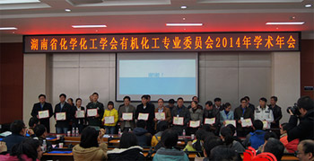

"湖北省化学化工学会青年委员会成立会议暨全体委员第一次会议在华中科技大学成功召开"
作者： 湖北省化学化工学会 发表时间： 2017-09-12
2017年8月21日，湖北省化学化工学会青年委员会成立会议暨全体委员第一次会议在华中科技大学国际学术交流中心成功召开。来自省内部分高校、企业的26名委员及华中科技大学化学与化工学院10名优秀青年教师代表参加了此次会议。湖北省化学化工学会秘书长袁明、华中科技大学科协常务副主席曹锋、华中科技大学化学与化工学院党委书记李涛、湖北省化学工业研究设计院党委书记李东兴等领导出席了此次会议。
会议由华中科技大学化学与化工学院朱锦涛院长主持。
华中科技大学科协常务副主席曹锋首先致欢迎辞。他代表华中科技大学对各位委员、专家学者的莅临表示热烈欢迎，并简要介绍了华中科技大学化学与化工学院的发展状况、学科建设、科研成果等方面的情况，并表示校科协将全力支持湖北省化学化工学会青年委员会的各项工作。
2017年8月21日，湖北省化学化工学会青年委员会成立会议暨全体委员第一次会议在华中科技大学国际学术交流中心成功召开。来自省内部分高校、企业的26名委员及华中科技大学化学与化工学院10名优秀青年教师代表参加了此次会议。湖北省化学化工学会秘书长袁明、华中科技大学科协常务副主席曹锋、华中科技大学化学与化工学院党委书记李涛、湖北省化学工业研究设计院党委书记李东兴等领导出席了此次会议。
会议由华中科技大学化学与化工学院朱锦涛院长主持。
华中科技大学科协常务副主席曹锋首先致欢迎辞。他代表华中科技大学对各位委员、专家学者的莅临表示热烈欢迎，并简要介绍了华中科技大学化学与化工学院的发展状况、学科建设、科研成果等方面的情况，并表示校科协将全力支持湖北省化学化工学会青年委员会的各项工作。